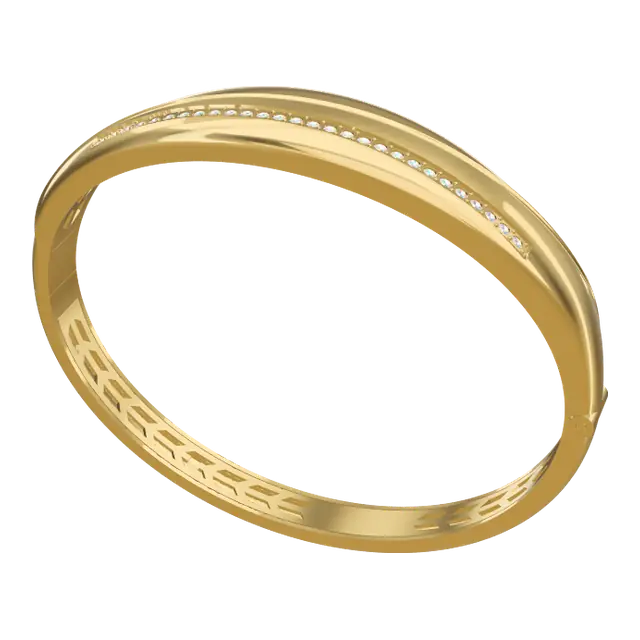
Altın kelepçeK-02Kelepçeler · Menteşeli kelepçe Pusula · dümen kolye
Pusula · dümen kolyeR-KT-01Rota · Katmanlı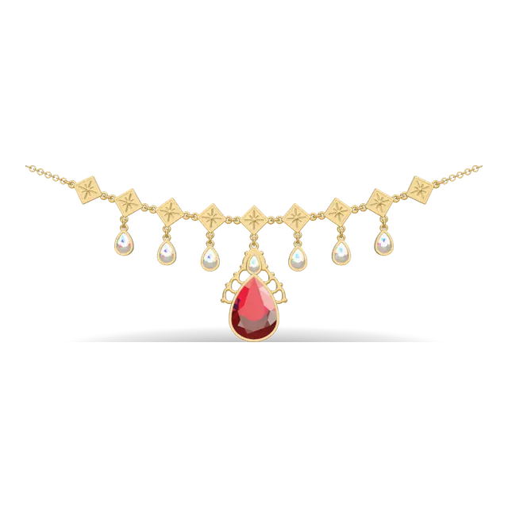
Damla kolyeD-01Damla · Kolye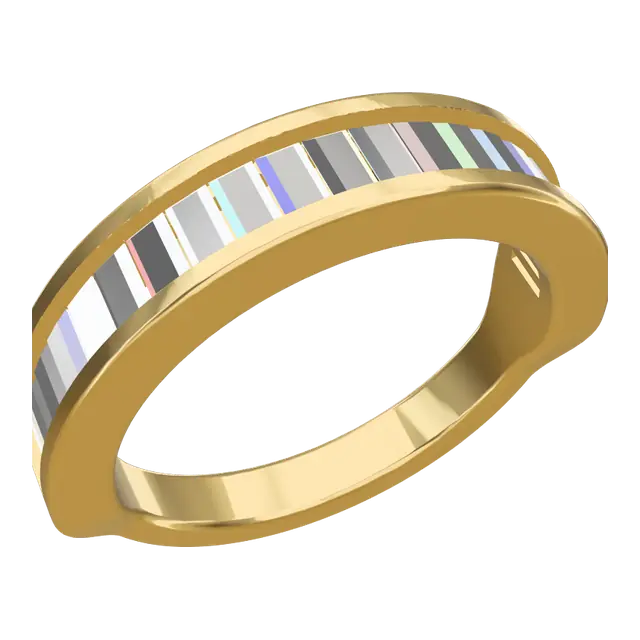
Baget kanal alyansM-06Mıhlama v1 · KanalDümen dönenDY-05Dümen yüzükleri · Yüzük Dümen kolye
Dümen kolyeR-MD-03Rota · Madalyon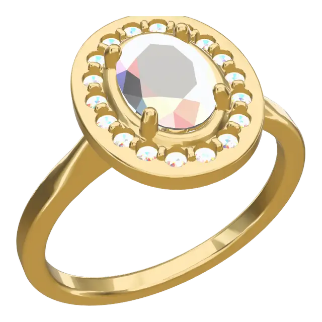
Oval haloM-04Mıhlama v1 · Halo Taşlı oval kelepçe
Taşlı oval kelepçeK-01Kelepçeler · Menteşeli kelepçe Pusula yüzük
Pusula yüzükR-TM-01Rota · Taş merkezli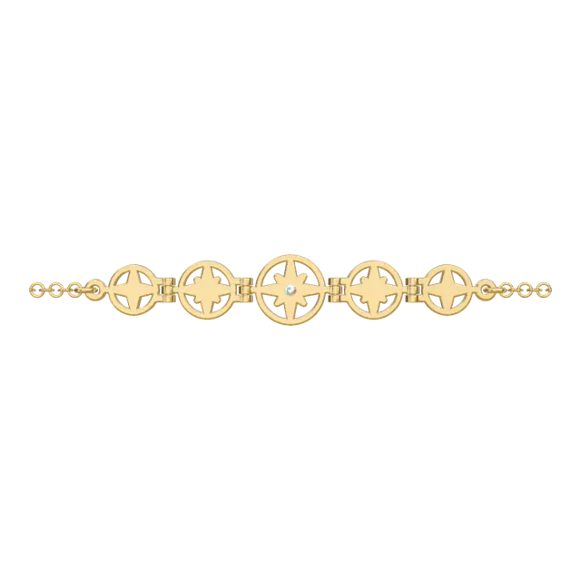
Pusula bileklikR-BK-04Rota · BaklaDümen pusulaDY-04Dümen yüzükleri · Yüzük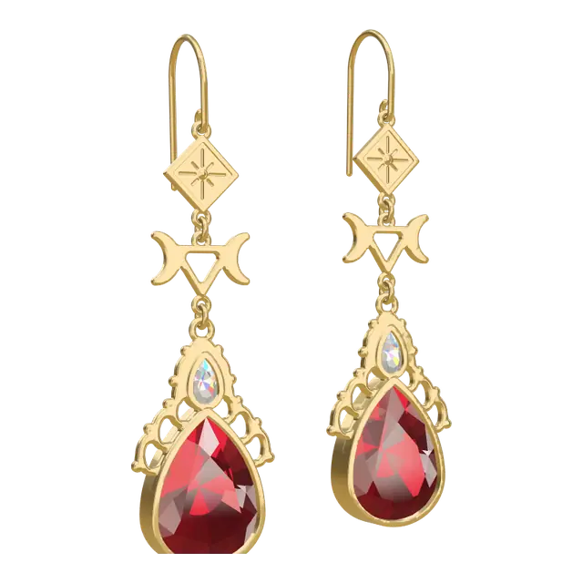
Damla küpeD-02Damla · Küpe Kutup yıldızı kolye
Kutup yıldızı kolyeR-SL-05Rota · Silüet Düğüm yüzük
Düğüm yüzükR-TC-01Rota · Tel çizgi Usturlap kolye
Usturlap kolyeDV-13Devran · Mekanik Eklemli balık
Eklemli balıkDV-19Devran · Mekanik Kafes küre kolye
Kafes küre kolyeDV-07Devran · Mekanik Elmas kesimli burma yüzük
Elmas kesimli burma yüzükSY-07Selim'in Yüzükleri · Burma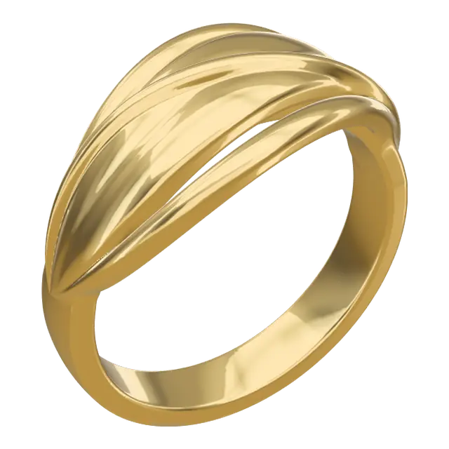
Cilalı kubbe yüzükSY-09Selim'in Yüzükleri · Kubbe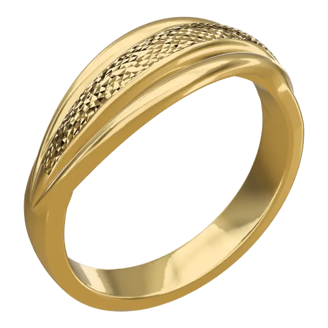
Dar kubbe yüzükSY-08Selim'in Yüzükleri · Kubbe Tam tur burma yüzük
Tam tur burma yüzükSY-06Selim'in Yüzükleri · Burma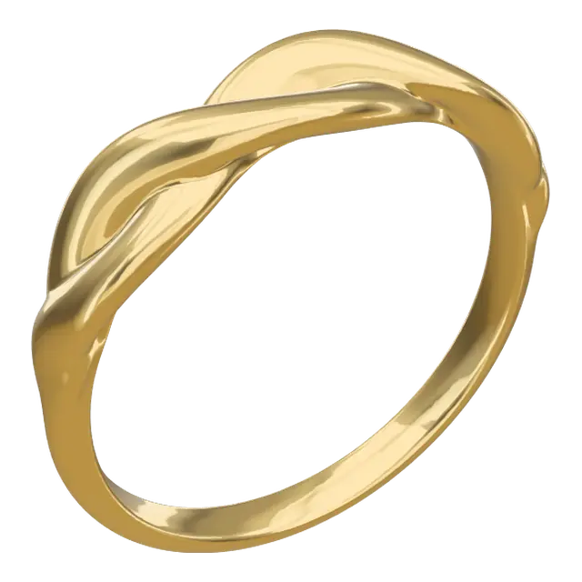
Dört loblu burma yüzükSY-05Selim'in Yüzükleri · Burma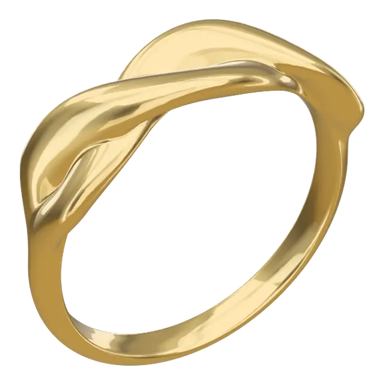
Geniş burma yüzükSY-04Selim'in Yüzükleri · Burma İnce burma alyans
İnce burma alyansSY-03Selim'in Yüzükleri · Burma Elmas kesimli kubbe yüzük
Elmas kesimli kubbe yüzükSY-02Selim'in Yüzükleri · Kubbe Burma alyans
Burma alyansSY-01Selim'in Yüzükleri · Burma Eklemli yusufçuk broş
Eklemli yusufçuk broşDV-22Devran · Mekanik Eklemli karides kolye
Eklemli karides kolyeDV-21Devran · Mekanik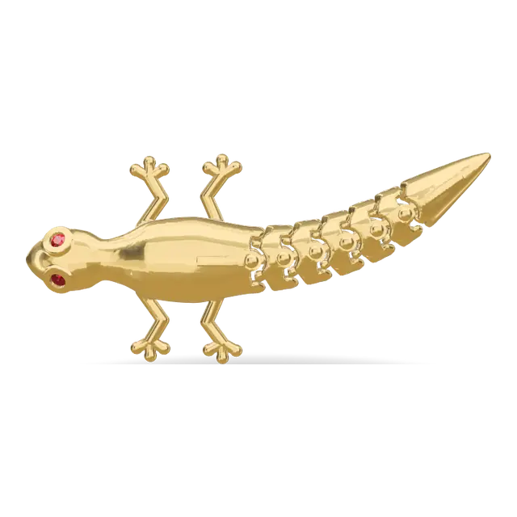
Eklemli kertenkele broşDV-20Devran · Mekanik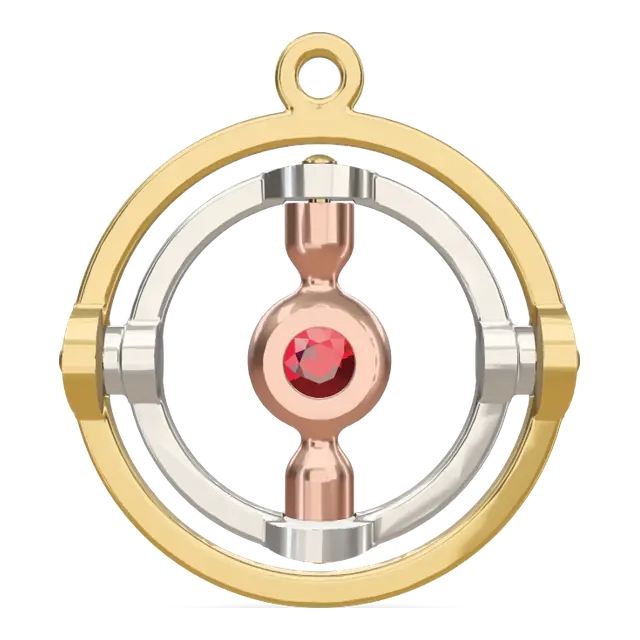
Usturlap taşlı kolyeDV-18Devran · Mekanik Usturlap bileklik ucu
Usturlap bileklik ucuDV-17Devran · Mekanik Usturlap madalyon
Usturlap madalyonDV-16Devran · Mekanik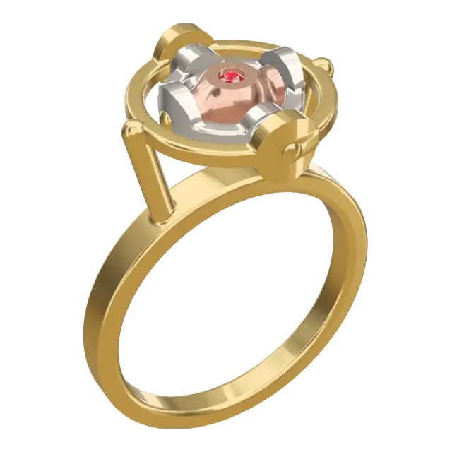
Usturlap yüzükDV-15Devran · Mekanik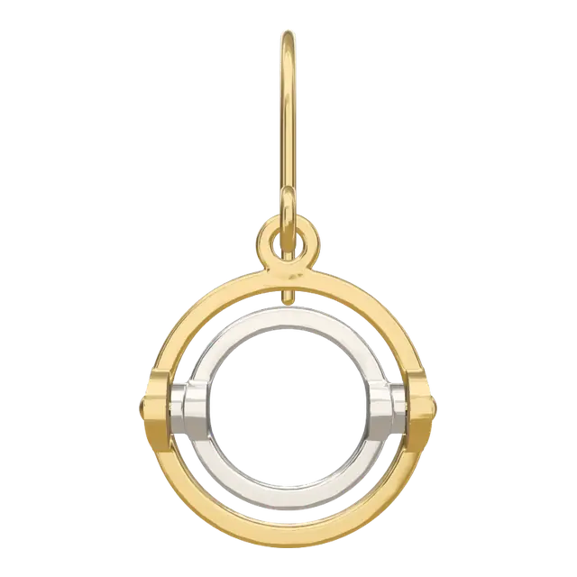
Usturlap küpeDV-14Devran · Mekanik Kafes çift hazneli kolye
Kafes çift hazneli kolyeDV-12Devran · Mekanik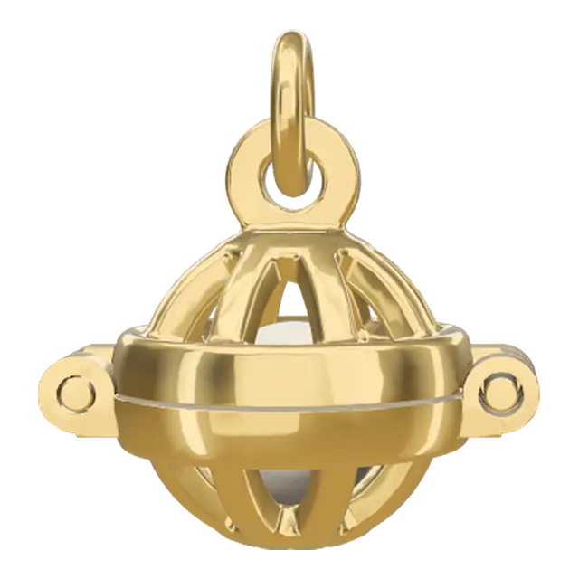
Kafes bileklik ucuDV-11Devran · Mekanik Kafes yüzük
Kafes yüzükDV-10Devran · Mekanik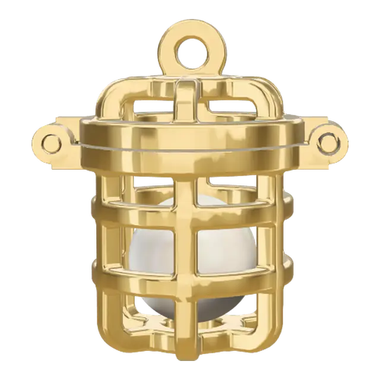
Kafes fener kolyeDV-09Devran · Mekanik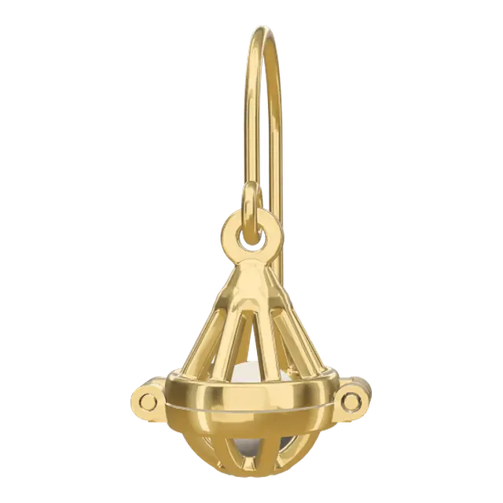
Kafes damla küpeDV-08Devran · Mekanik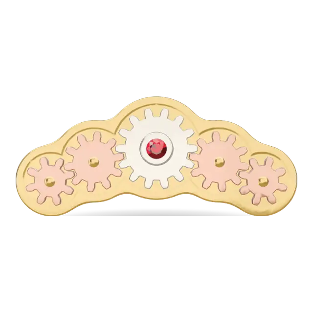
Çark broşDV-06Devran · Mekanik Çark kol düğmesi
Çark kol düğmesiDV-05Devran · Mekanik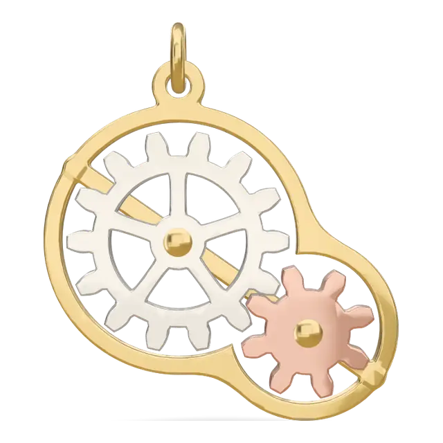
Çark bileklik ucuDV-04Devran · Mekanik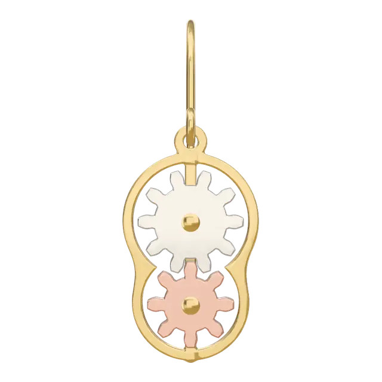
Çark küpeDV-03Devran · Mekanik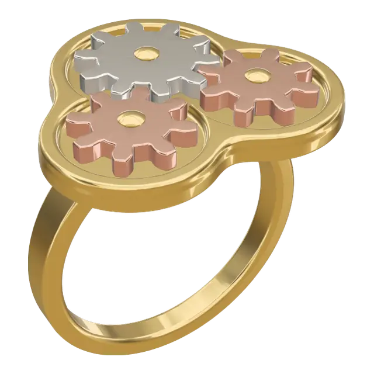
Çark yüzükDV-02Devran · MekanikHilal bilezikBH-21Bahçe · Madalyon Hilal bileklik
Hilal bileklikBH-20Bahçe · Madalyon Hilal kolye
Hilal kolyeBH-19Bahçe · Madalyon Hilal küpe
Hilal küpeBH-18Bahçe · Madalyon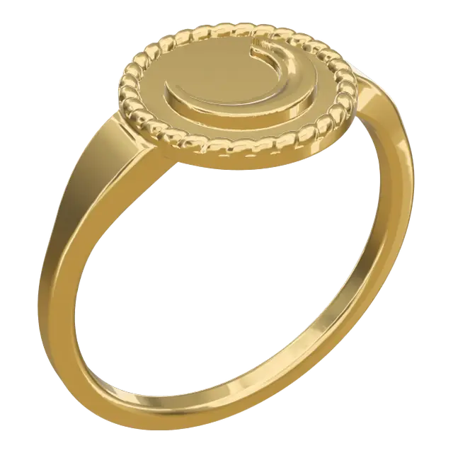
Hilal yüzükBH-17Bahçe · Madalyon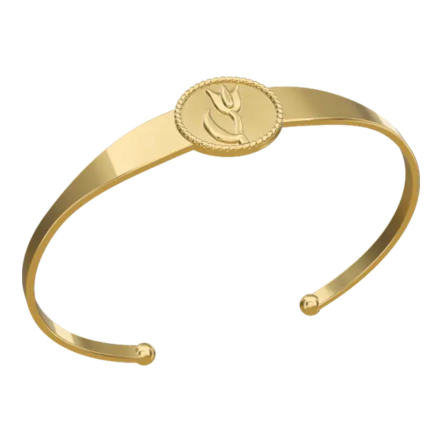
Lale bilezikBH-16Bahçe · Madalyon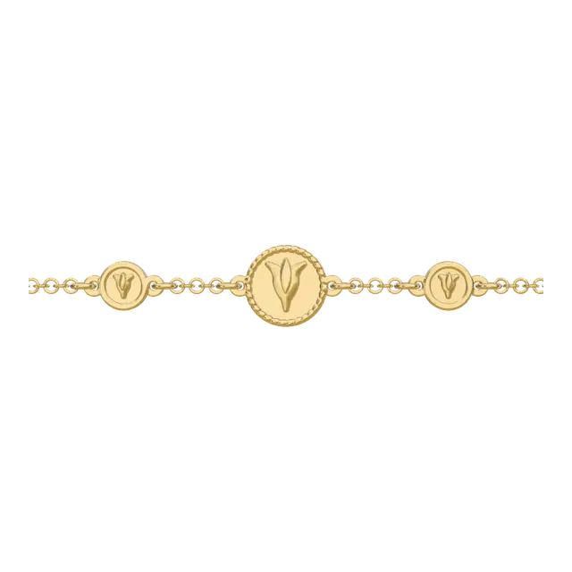
Lale bileklikBH-15Bahçe · Madalyon Lale kolye
Lale kolyeBH-14Bahçe · Madalyon Lale küpe
Lale küpeBH-13Bahçe · MadalyonLale yüzükBH-12Bahçe · Madalyon Nar taşlı kolye
Nar taşlı kolyeBH-11Bahçe · Madalyon Nar bilezik
Nar bilezikBH-10Bahçe · Madalyon Nar bileklik
Nar bileklikBH-09Bahçe · Madalyon Nar kolye
Nar kolyeBH-08Bahçe · Madalyon Nar küpe
Nar küpeBH-07Bahçe · Madalyon Nar yüzük
Nar yüzükBH-06Bahçe · Madalyon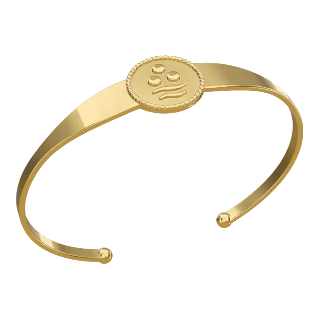
Çintemani bilezikBH-05Bahçe · Madalyon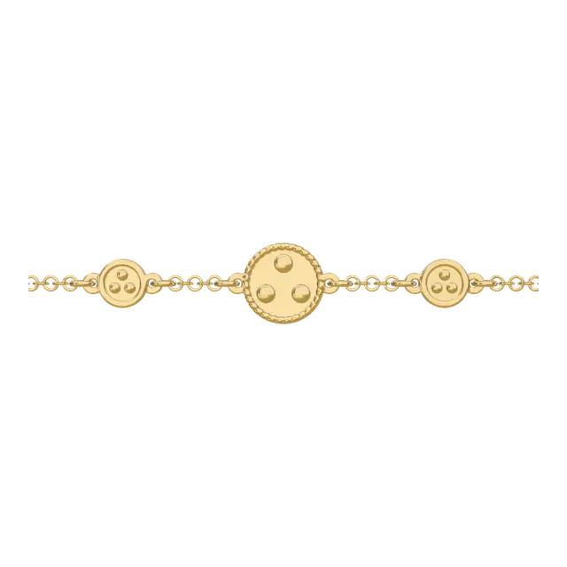
Çintemani bileklikBH-04Bahçe · Madalyon Çintemani kolye
Çintemani kolyeBH-03Bahçe · Madalyon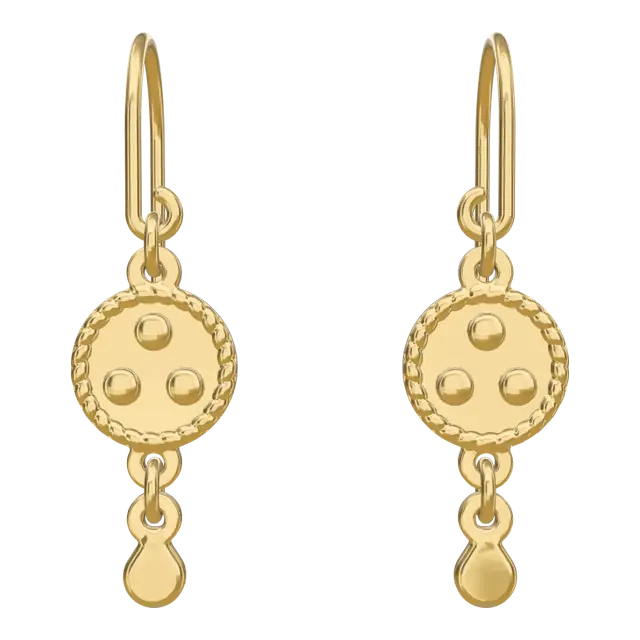
Çintemani küpeBH-02Bahçe · Madalyon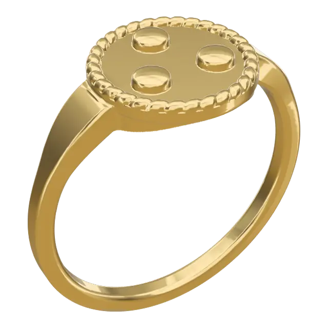
Çintemani yüzükBH-01Bahçe · Madalyon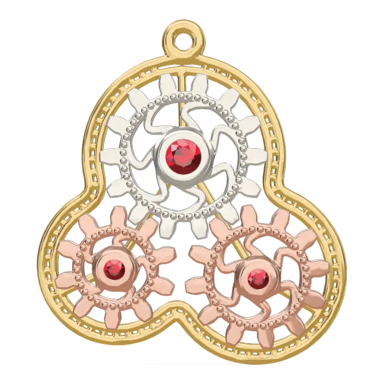
Çark kolyeDV-01Devran · Mekanik Rota pusula · tırnaklı
Rota pusula · tırnaklıM-11Mıhlama v1 · Tırnaklı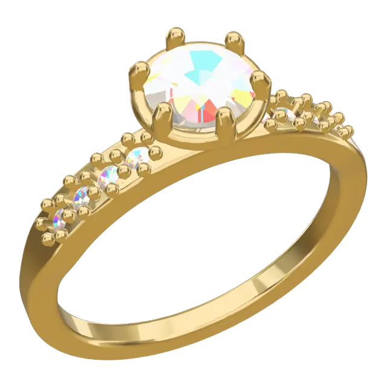
Omuzları taşlı tektaşM-09Mıhlama v1 · Tırnaklı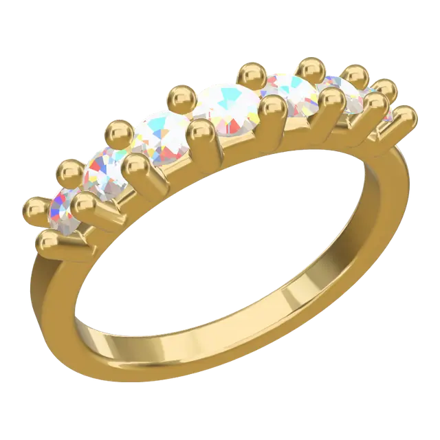
Kademeli ortak tırnak · 7 taşM-08Mıhlama v1 · Ortak tırnak Üç taş
Üç taşM-07Mıhlama v1 · Üç taş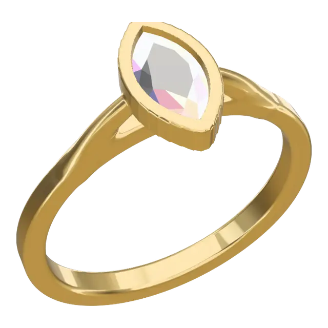
Markiz gömmeM-10Mıhlama v1 · Gömme Damla tektaş · V tırnak
Damla tektaş · V tırnakM-05Mıhlama v1 · Tırnaklı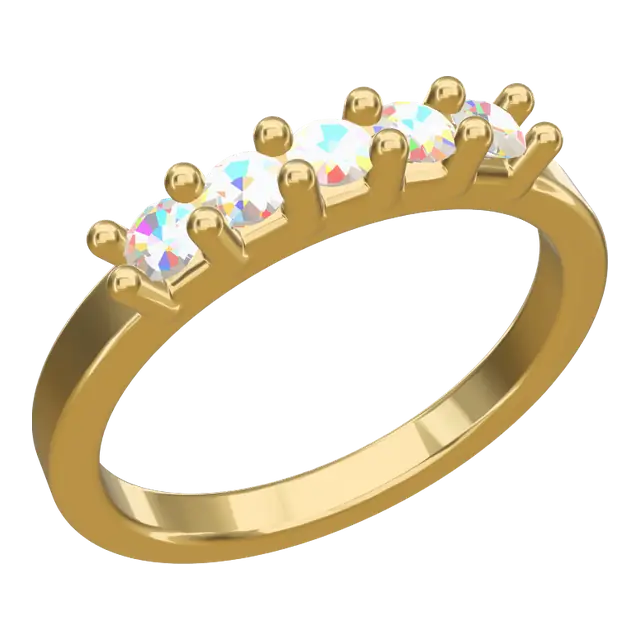
Ortak tırnak · 5 taşM-03Mıhlama v1 · Ortak tırnak Kanal · yarım tur
Kanal · yarım turM-02Mıhlama v1 · Kanal Tektaş · 6 pençe
Tektaş · 6 pençeM-01Mıhlama v1 · Tırnaklı Pusula · dümen yüzük (taşsız)
Pusula · dümen yüzük (taşsız)R-KT-06Rota · Katmanlı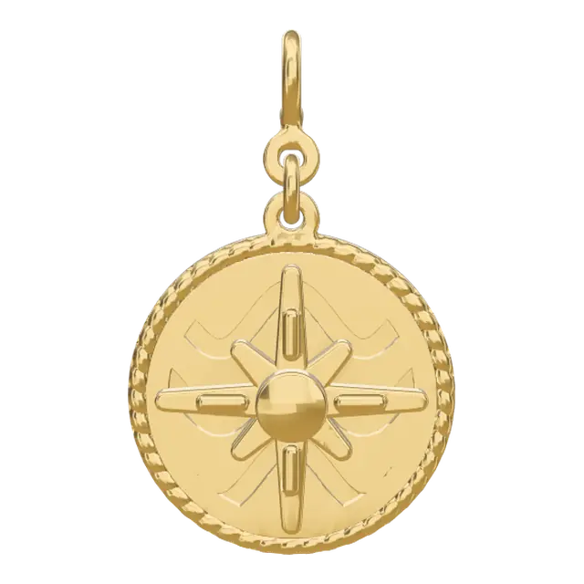
Dalga · yıldız kolye (taşsız)R-KT-05Rota · Katmanlı Pusula · dümen kolye (taşsız)
Pusula · dümen kolye (taşsız)R-KT-04Rota · Katmanlı Pusula · dümen yüzük
Pusula · dümen yüzükR-KT-03Rota · Katmanlı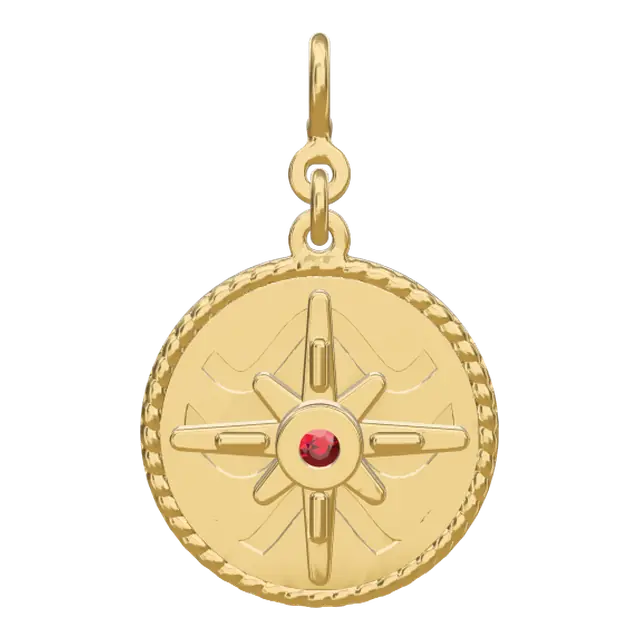
Dalga · yıldız kolyeR-KT-02Rota · Katmanlı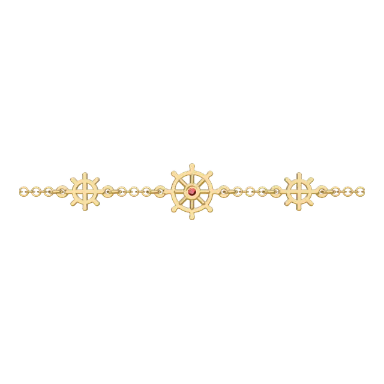
Dümen bileklikR-SL-11Rota · Silüet Dümen küpe
Dümen küpeR-SL-10Rota · Silüet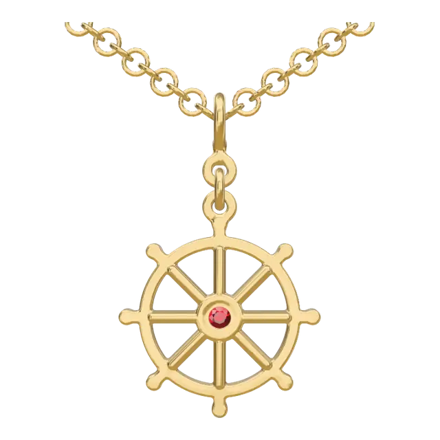
Dümen kolyeR-SL-09Rota · Silüet Kutup yıldızı yüzük
Kutup yıldızı yüzükR-SL-08Rota · Silüet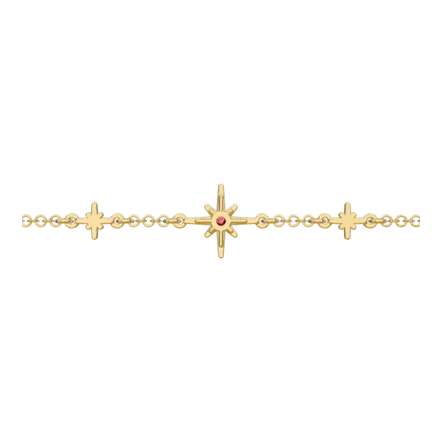
Kutup yıldızı bileklikR-SL-07Rota · Silüet Kutup yıldızı küpe
Kutup yıldızı küpeR-SL-06Rota · Silüet Çapa yüzük
Çapa yüzükR-SL-04Rota · Silüet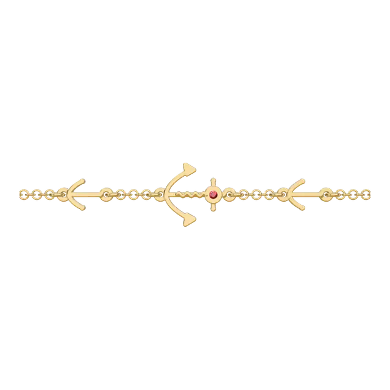
Çapa bileklikR-SL-03Rota · Silüet Çapa küpe
Çapa küpeR-SL-02Rota · Silüet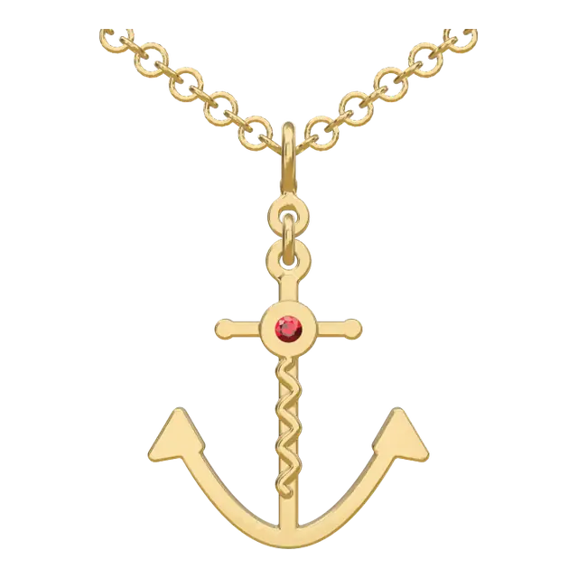
Çapa kolyeR-SL-01Rota · Silüet Dümen bileklik
Dümen bileklikR-TM-12Rota · Taş merkezli Dümen kolye
Dümen kolyeR-TM-11Rota · Taş merkezli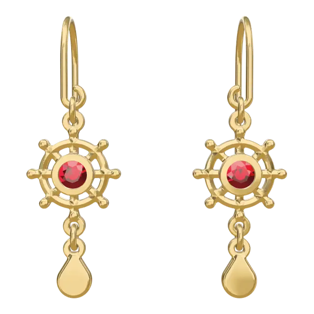
Dümen küpeR-TM-10Rota · Taş merkezli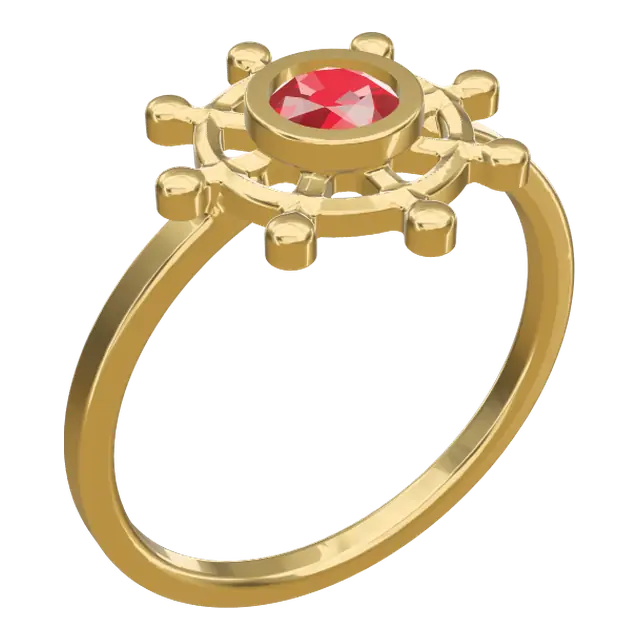
Dümen yüzükR-TM-09Rota · Taş merkezli Kutup yıldızı bileklik
Kutup yıldızı bileklikR-TM-08Rota · Taş merkezli Kutup yıldızı kolye
Kutup yıldızı kolyeR-TM-07Rota · Taş merkezli Kutup yıldızı küpe
Kutup yıldızı küpeR-TM-06Rota · Taş merkezli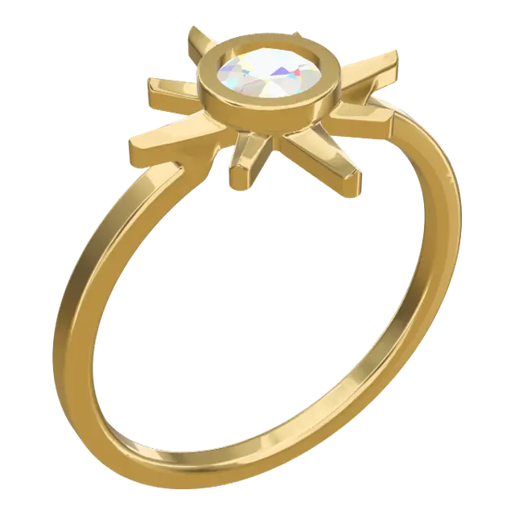
Kutup yıldızı yüzükR-TM-05Rota · Taş merkezli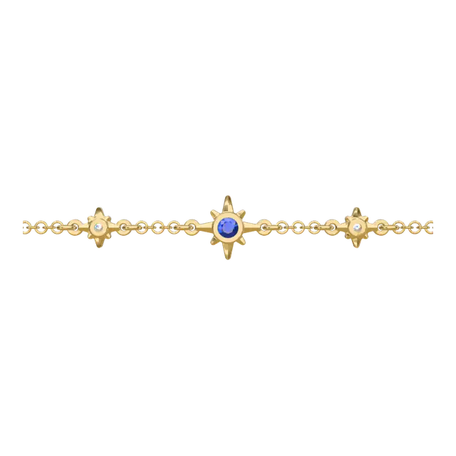
Pusula bileklikR-TM-04Rota · Taş merkezli Pusula kolye
Pusula kolyeR-TM-03Rota · Taş merkezli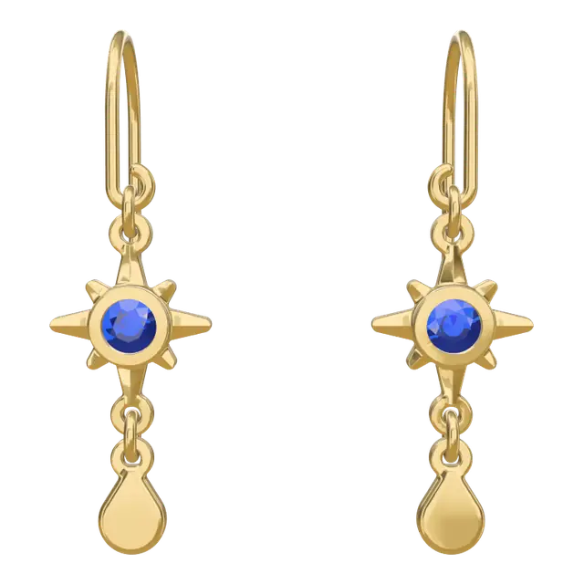
Pusula küpeR-TM-02Rota · Taş merkezli Dalga bilezik
Dalga bilezikR-MD-30Rota · Madalyon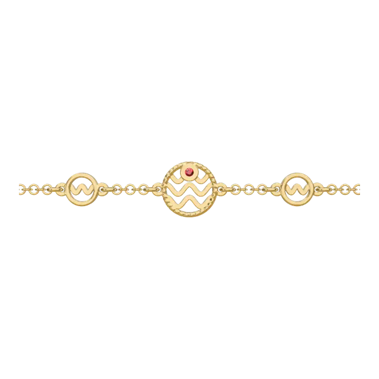
Dalga bileklikR-MD-29Rota · Madalyon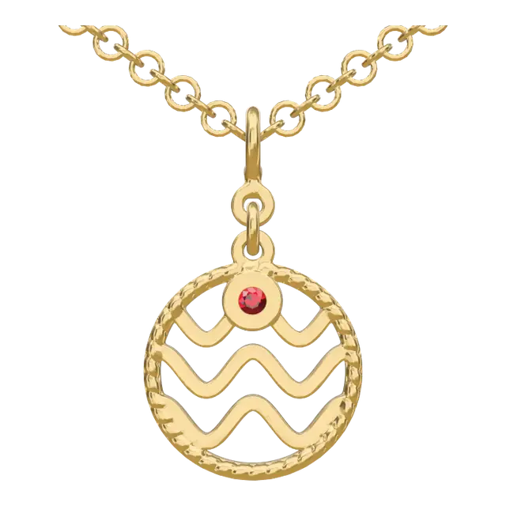
Dalga kolyeR-MD-28Rota · Madalyon Dalga küpe
Dalga küpeR-MD-27Rota · Madalyon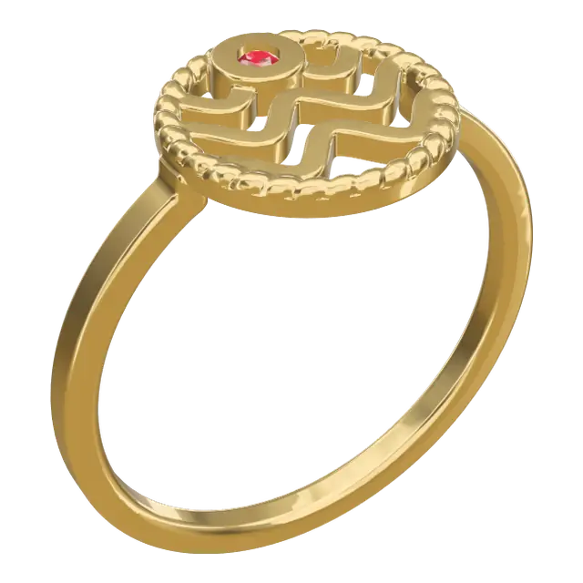
Dalga yüzükR-MD-26Rota · Madalyon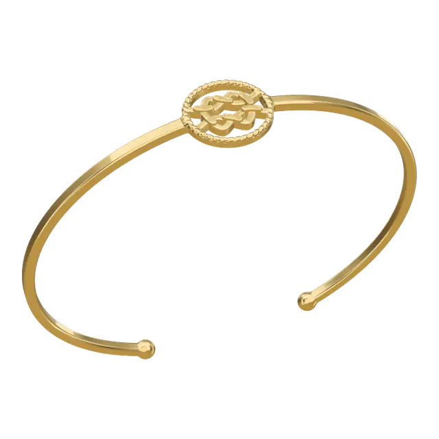
Düğüm bilezikR-MD-25Rota · Madalyon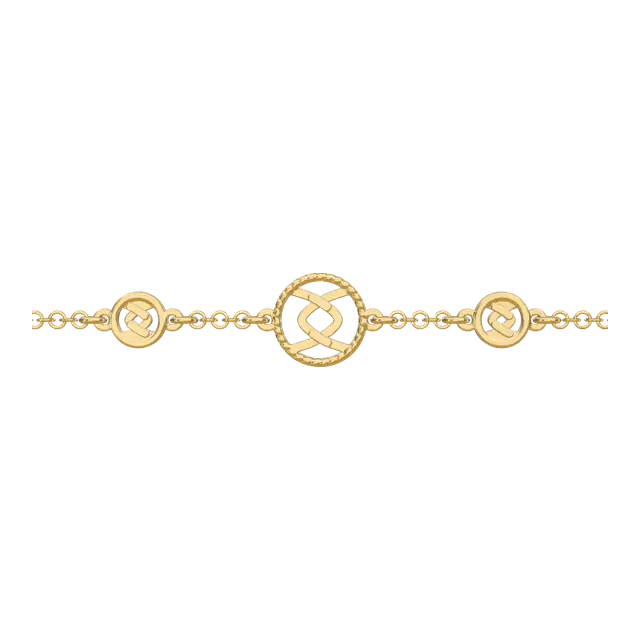
Düğüm bileklikR-MD-24Rota · Madalyon Düğüm kolye
Düğüm kolyeR-MD-23Rota · Madalyon Düğüm küpe
Düğüm küpeR-MD-22Rota · MadalyonDüğüm yüzükR-MD-21Rota · MadalyonÇapa bilezikR-MD-20Rota · Madalyon Çapa bileklik
Çapa bileklikR-MD-19Rota · MadalyonÇapa kolyeR-MD-18Rota · Madalyon Çapa küpe
Çapa küpeR-MD-17Rota · Madalyon Çapa yüzük
Çapa yüzükR-MD-16Rota · MadalyonKutup yıldızı bilezikR-MD-15Rota · MadalyonKutup yıldızı bileklikR-MD-14Rota · Madalyon Kutup yıldızı kolye
Kutup yıldızı kolyeR-MD-13Rota · MadalyonKutup yıldızı küpeR-MD-12Rota · Madalyon Kutup yıldızı yüzük
Kutup yıldızı yüzükR-MD-11Rota · MadalyonPusula bilezikR-MD-10Rota · MadalyonPusula bileklikR-MD-09Rota · MadalyonPusula kolyeR-MD-08Rota · Madalyon Pusula küpe
Pusula küpeR-MD-07Rota · Madalyon Pusula yüzük
Pusula yüzükR-MD-06Rota · Madalyon Dalga alyans
Dalga alyansR-BK-09Rota · Bakla Dalga kolye
Dalga kolyeR-BK-08Rota · BaklaDalga bileklikR-BK-07Rota · BaklaPusula alyansR-BK-06Rota · Bakla Pusula kolye
Pusula kolyeR-BK-05Rota · Bakla Dümen alyans
Dümen alyansR-BK-03Rota · Bakla Dümen kolye
Dümen kolyeR-BK-02Rota · BaklaDümen bileklikR-BK-01Rota · BaklaDalga bilezikR-TC-08Rota · Tel çizgi Dalga kolye
Dalga kolyeR-TC-07Rota · Tel çizgi Dalga küpe
Dalga küpeR-TC-06Rota · Tel çizgi Dalga yüzük
Dalga yüzükR-TC-05Rota · Tel çizgi Düğüm bilezik
Düğüm bilezikR-TC-04Rota · Tel çizgiDüğüm kolyeR-TC-03Rota · Tel çizgiDüğüm küpeR-TC-02Rota · Tel çizgiDümen bilezikR-MD-05Rota · Madalyon Dümen bileklik
Dümen bileklikR-MD-04Rota · MadalyonDümen küpeR-MD-02Rota · MadalyonDümen yüzükR-MD-01Rota · MadalyonDümen ajurDY-03Dümen yüzükleri · Yüzük Dümen blok
Dümen blokDY-02Dümen yüzükleri · Yüzük Dümen mühür
Dümen mühürDY-01Dümen yüzükleri · Yüzük Damla yüzük
Damla yüzükD-04Damla · YüzükDamla kelepçeD-03Damla · BilezikKubbeSelim'in Yüzükleri · 3 ürünBurmaSelim'in Yüzükleri · 6 ürünEklemliDevran · Mekanik · 4 ürünUsturlapDevran · Mekanik · 6 ürünKafesDevran · Mekanik · 6 ürünÇarkDevran · Mekanik · 6 ürünHilalBahçe · Madalyon · 5 ürünLaleBahçe · Madalyon · 5 ürünNarBahçe · Madalyon · 6 ürünÇintemaniBahçe · Madalyon · 5 ürünMıhlama v1Mıhlama v1 · Kanal · 11 ürünKelepçelerKelepçeler · Menteşeli kelepçe · 2 ürünKatmanlıRota · 6 ürünDümenRota · Silüet · 3 ürünKutup yıldızıRota · Silüet · 4 ürünÇapaRota · Silüet · 4 ürünDümenRota · Taş merkezli · 4 ürünKutup yıldızıRota · Taş merkezli · 4 ürünPusulaRota · Taş merkezli · 4 ürünDalgaRota · Madalyon · 5 ürünDüğümRota · Madalyon · 5 ürünÇapaRota · Madalyon · 5 ürünKutup yıldızıRota · Madalyon · 5 ürünPusulaRota · Madalyon · 5 ürünDalgaRota · Bakla · 3 ürünPusulaRota · Bakla · 3 ürünDümenRota · Bakla · 3 ürünDalgaRota · Tel çizgi · 4 ürünDüğümRota · Tel çizgi · 4 ürünDümenRota · Madalyon · 5 ürünDümen YüzükleriDümen yüzükleri · 5 ürünDamla SetiDamla · 4 ürünBu seçimle eşleşen ürün yok.